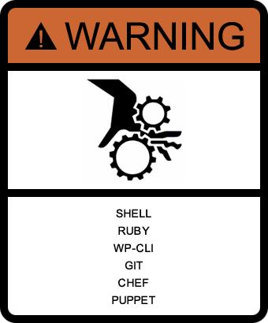

Rockin' Local Development w/ Vagrant


So What's Vagrant?
Vagrant is free and open-source software for creating and configuring virtual development environments.[1] It can be considered a wrapper around virtualization software such as VirtualBox and configuration management software such as Chef, Salt and Puppet.
http://en.wikipedia.org/wiki/Vagrant_(software)
Virtualized Dev Environment
Predictable
Portable
Disposable
Why Vagrant?
"it works on my machine"Nothing makes me go into table-flipping mode faster than this phrase. Eliminate inconsistencies between your development environment and your production environment by mimicking prod as close as possible.
https://jtreminio.com/2013/06/make_vagrant_up_yours/
Benefits of using Vagrant
Test & deploy with confidence
Isolation from local applications
Quickly onboard new developers
Reliably change environments
Your first $ vagrant up
vagrantpress.org
Varying Vagrant Vagrants
VCCW
Beyond your first $ vagrant up
Provisioning
vvv-init, vvv-nginx & vvv-auto-setup
Roll your own
Vagrantfile
puphpet.com
Extending Vagrant
Hosts file updater
wp-cli ssh
Vagrant multi machine
Resouces
docs.vagrantup.com
vagrantbox.es
vagrantcloud.com
Q & A
@rfair
1 / 15